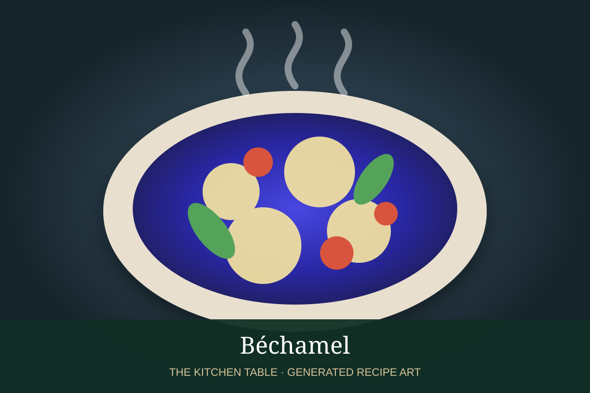

← Béchamel & daughter sauces
SAUCE · BÉCHAMEL DAUGHTER SAUCE
Crème Sauce
A richer Béchamel daughter sauce finished with heavy cream for an extra-silky texture.
15 minMakes about 2 cups

Photo: Chefkoch
Ingredients
- 2 cups prepared Béchamel
- 1/2 cup heavy cream
- 1 tbsp unsalted butter
- Salt and white pepper
- Pinch of nutmeg
Preparation
- Bring the Béchamel to a gentle simmer over low heat.
- Whisk in the heavy cream and cook 3 to 5 minutes until the sauce is smooth and slightly reduced.
- Remove from heat and whisk in butter.
- Season with salt, white pepper, and nutmeg.
- Use immediately over vegetables, poultry, fish, or pasta.
Base sauce: Start with the Béchamel recipe →